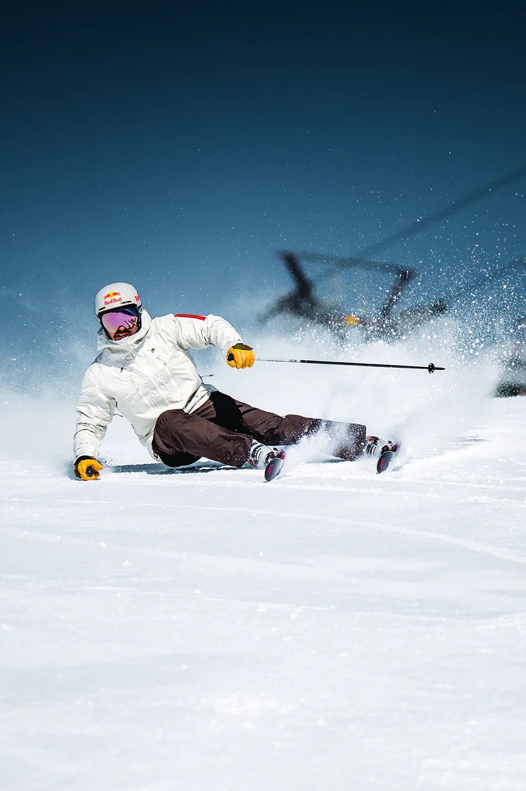

Inspired by Marcel Hirscher, our founder and the man behind the brand, we like to do things differently at VAN DEER-Red Bull Sports. We believe in the power of ‘new’. In a new no-compromise approach to skiing and ski equipment. In a new generation of skiers. And in breaking new ground in the ski (racing) world. With pooled knowledge, a shared sporting vision and full of passion, we build world-class skis for the winners of tomorrow. And for anyone who believes that good is not good enough.
Marcel Hirscher’s story is one-of a-kind. Competing at the highest level for 15 years, he profoundly changed the world of ski racing by setting new standards with his exceptional talent, technical skills, race intelligence, training methods, and physical fitness. What really set him apart from everybody else, though, was his professional, no-compromise approach to his equipment.
Marcel’s obsession for tinkering and fiddling with things and his perfectionism often drove people mad. But his ability to translate his intuition and extraordinary feeling for both snow and gear into innovation have made him one of the most successful alpine skiers of all time.
The fact that Marcel has achieved everything there is to achieve in alpine skiing is also a result of his long-standing partnership with Red Bull. And so it comes as no surprise that this collaboration has created a common vision. Being an innovative ski manufacturer, VAN DEER-Red Bull Sports is ushering in a new era to take skiing to the next level – with pooled knowledge, an uncompromising winning spirit and drive for perfection. Not just on the racecourse, but also in Marcel’s new favorite playgrounds: backcountry and big mountain.
- hier komt een link - hier komt nog een handtekeningOur skis are developed, built, tested, and tuned with the same know-how, meticulousness and obsessive drive for perfection that helped Marcel Hirscher become who he is today: the greatest alpine skier of our time.
video plaatsen hier